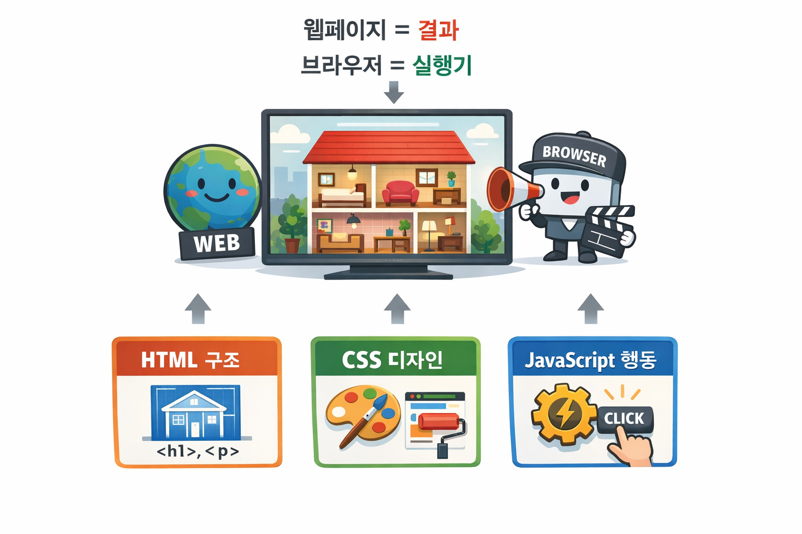

실행환경과 JavaScript 실행 흐름 이해
강의 목표
오늘은 JavaScript가 어디에서, 어떤 순서로 실행되는지를 이해한다.
- JavaScript 실행 환경을 설명할 수 있다
- 브라우저가 HTML을 처리하는 흐름을 이해한다
<script>위치에 따른 실행 시점을 설명할 수 있다- JavaScript가 DOM을 다루는 언어임을 이해한다
JavaScript 문법을 배우기 전에 반드시 짚고 가야 하는 기초 개념을 다룬다.
전체 실습 폴더 구조
day1/
├─ 4-runtime.html
├─ 5-dom-manipulation.html
└─ 6-script-order.html
1. JavaScript는 어디에서 실행되는가
JavaScript는 브라우저나 Node.js 같은 JavaScript 실행 환경(JavaScript Runtime) 위에서 실행된다.
JavaScript는 단독으로 동작하지 않으며, 항상 실행 환경이 제공하는 기능 위에서 실행된다.
2. 브라우저 관점에서 본 HTML · CSS · JavaScript의 역할

-
HTML 문서: 집의 설계도
(브라우저가 이 설계도를 읽고, 어떤 방이 있고 문이 어디 있는지 구조를 파악해서 집(DOM)을 만든다) -
CSS: 집을 꾸미는 인테리어 규칙
(브라우저가 인테리어 규칙을 적용해, 벽 색깔, 크기, 위치, 배치 등을 정해 집을 어떻게 보이게 할지 결정한다) -
JavaScript: 집을 제어하는 자동 제어 시스템
(브라우저가 JavaScript 엔진으로 명령을 실행해, 문을 열고 닫거나 방을 없애고 새로 만드는 등 집의 구조와 상태를 실행 중에 바꾼다)
HTML은 DOM을 만들기 위한 설계도이고,
CSS는 스타일 규칙,
JavaScript는 실행 중 DOM을 제어하는 도구다.
3. 브라우저 동작 원리
브라우저는 HTML·CSS·JavaScript를 처리하고
그 결과를 화면에 표시하는 실행 환경이다.
HTML 코드가 화면에 보이기까지 브라우저 내부에서는
여러 구성 요소가 역할을 나누어 순차적으로 동작한다.
-
HTML 파서
HTML 문서를 위에서 아래로 순서대로 해석하며 웹페이지의 구조를 나타내는 DOM(Document Object Model) 을 생성한다.<style>태그를 만나면 CSS 코드를 CSS 파서에게 전달하고,<script>태그를 만나면 script 요소를 DOM에 추가한 뒤, 그 아래의 HTML 해석을 잠시 보류하고 JavaScript 코드 실행을 JavaScript 엔진에 위임한다. -
CSS 파서
전달받은 CSS 코드를 해석해 각 DOM 요소가 화면에 어떻게 보일지를 결정하는 스타일 규칙 정보를 생성한다. -
JavaScript 엔진
HTML 파서로부터 실행이 위임된<script>안의 JavaScript 코드를 위에서부터 차례대로 실행한다. 실행 과정에서 DOM 구조나 요소의 스타일 값을 변경할 수 있다. -
화면 갱신
JavaScript 실행이나 스타일 계산 결과로 DOM 구조나 스타일 정보가 변경되면, 브라우저는 변경된 내용을 반영하기 위해 화면을 다시 계산하고 갱신한다.
4. 브라우저의 Console 기능
개발자 도구의 Console은 JavaScript 실행 결과와 오류를 확인하는 공간이다.
실습 가이드
📄 파일명: 4-runtime.html
<!DOCTYPE html>
<html lang="ko">
<head>
<meta charset="UTF-8" />
<title>Day 1 - Runtime</title>
</head>
<body>
<h1>JavaScript 실행 확인</h1>
<script>
// Step 1. 실행 확인
console.log("JavaScript 실행 중");
// Step 2. 실행 순서 확인
//console.log("1) 시작");
//console.log("2) 실행 중");
//console.log("3) 끝");
// Step 3. 오류 메시지 확인 (아래 한 줄의 주석을 해제하면 오류를 볼 수 있다)
// console.log(x); // 아직 만들어지지 않은 값을 사용
</script>
</body>
</html>
준비
- 브라우저에서 파일을 직접 열어 실행한다
- 개발자 도구(Console)를 열어둔 상태에서 진행한다
- 각 Step마다 실행 결과를 먼저 예측한 뒤 실행한다
Step 1. JavaScript 실행 여부 확인
- Console에 문자열을 출력한다.
체크 포인트
- 페이지를 새로고침할 때마다 Console에 동일한 메시지가 출력된다
- JavaScript 코드가 실제로 실행되고 있음을 확인한다
Step 2. 실행 순서 확인
- 여러 개의 출력 코드를 위에서 아래 순서로 작성한다.
체크 포인트
- 출력 결과는 코드가 작성된 순서대로 나타난다
- JavaScript는 위에서 아래로 순차 실행된다
Step 3. 오류 메시지 확인
- 선언되지 않은 값을 출력해 본다.
체크 포인트
- Console에 오류 메시지가 출력된다
- 오류 메시지가 문제 해결의 단서가 됨을 인식한다
정리
- Console은 실행 결과와 오류를 확인하는 도구다
- JavaScript는 작성된 순서대로 실행된다
- 오류 메시지는 문제 해결의 출발점이다
5. JavaScript와 DOM 조작
JavaScript는 브라우저가 만들어 둔 DOM을 조작하여 화면의 구조와 상태를 변경한다.
실습 가이드
📄 파일명: 5-dom-manipulation.html
<!DOCTYPE html>
<html lang="ko">
<head>
<meta charset="UTF-8" />
<title>Day 1 - DOM Manipulation</title>
</head>
<body>
<h1 id="title">원래 화면</h1>
<script>
// Step별 실습 코드는 이 안에 작성한다
</script>
</body>
</html>
준비
- 브라우저에서 파일을 직접 열어 실행한다
- 개발자 도구(Console)를 열어둔 상태에서 진행한다
- 각 Step마다 실행 결과를 먼저 예측한 뒤 실행한다
Step 1. 배경색 변경
1. 아래 코드를 작성하고 새로고침한다
document.body.style.background = "black";
체크 포인트
- 페이지의 배경색이 검정색으로 바뀐다
document.body.style→<body>요소에 직접 적용되는 인라인 스타일을 다루는 객체
객체 구조 이해
-
document현재 웹페이지 전체를 나타내는 DOM 최상위 객체 -
document.body현재 문서의<body>태그에 해당하는 DOM 요소 객체 브라우저가 HTML을 해석할 때 자동으로 생성되며 항상 존재한다
Step 2. 글자색 변경
- 아래 코드를 이어서 작성하고 새로고침한다.
document.body.style.color = "lime";
체크 포인트
- 글자색이 연두색으로 바뀐다
- CSS를 파일로 바꾸는 게 아니라, "DOM 객체의 style 값"을 실행 중에 바꾼 것이다
Step 3. DOM 내용 바꾸기
- 아래 코드를 작성하고 새로고침한다.
document.body.innerHTML = "<h2>JavaScript가 바꾼 화면</h2>";
체크 포인트
- 기존
<h1>이 사라지고<h2>가 나타난다 - HTML 파일을 수정한 게 아니라, 브라우저 메모리의 DOM 내용을 바꾼 것이다
Step 4. 바뀐 DOM 값 출력
- 아래 코드를 추가해 DOM의 현재 상태를 출력한다.
console.log(document.body.innerHTML);
체크 포인트
- Console에 현재 DOM의 HTML 문자열이 출력된다
- DOM이 바뀌면 화면도 함께 바뀐다는 연결을 확인한다
정리
- JavaScript는 화면을 직접 그리는 게 아니라 DOM을 바꾼다
- DOM이 바뀌면 브라우저가 다시 렌더링하여 화면에 반영한다
6. JavaScript 실행 시점과 <script> 위치
<script>위치에 따라 DOM 접근 가능 시점이 달라진다.
실습 가이드
📄 파일명: 6-script-order.html
<!DOCTYPE html>
<html lang="ko">
<head>
<meta charset="UTF-8" />
<title>Day 1 - Script Order</title>
</head>
<body>
<script>
// Step별 실습 코드는 이 안에 작성한다
</script>
<h1 id="title">제목</h1>
<script>
// Step별 실습 코드는 이 안에 작성한다
</script>
</body>
</html>
준비
- 브라우저에서 파일을 직접 열어 실행한다
- 개발자 도구(Console)를 열어둔 상태에서 진행한다
- 각 Step마다 실행 결과를 먼저 예측한 뒤 실행한다
Step 1. 위쪽 <script>에서 요소 찾기
- 첫 번째
<script>안에 아래 코드를 작성한다.
console.log(document.getElementById("title"));
document.getElementById는 HTML 문서(DOM)에서 지정한 id 값을 가진 요소를 찾아 그 요소 객체를 반환하는 메서드이다.
체크 포인트
null이 출력된다- 이 시점에는 아직
<h1 id="title">이 DOM에 만들어지지 않았다
Step 2. 아래쪽 <script>에서 요소 찾기
- 두 번째
<script>안에도 같은 코드를 작성한다.
console.log(document.getElementById("title"));
체크 포인트
- 이번에는
<h1 id="title">...</h1>요소가 출력된다 <h1>이 먼저 DOM으로 만들어진 뒤, 아래 script가 실행되기 때문이다
Step 3. 실행 시점 문제로 생기는 흔한 증상 정리
- 아래 체크리스트를 보며 원인을 스스로 점검한다.
체크 포인트
id오타가 없는가- 따옴표를 제대로 닫았는가
<script>가 요소보다 위에 있지 않은가
Step 4. 해결 방향 미리보기
- 가장 쉬운 해결을 적용해 본다.
<script>를</body>바로 위로 옮긴다
체크 포인트
- 요소 선택이 안정적으로 동작한다
- "DOM 생성 이후에 JS 실행"이라는 원칙이 생긴다
1일차 핵심 정리
-
JavaScript는 브라우저나 Node.js 같은 실행 환경(Runtime) 위에서만 동작한다.
-
브라우저는 HTML → DOM 생성 → CSS 적용 → JavaScript 실행 → 화면 갱신 흐름으로 동작한다.
-
HTML은 DOM을 만들기 위한 설계도,
CSS는 DOM에 적용되는 스타일 규칙,
JavaScript는 실행 중 DOM을 조작하는 도구다. -
JavaScript 코드는 위에서 아래로 순차 실행된다.
-
Console은 실행 결과 확인과 오류 원인 파악의 핵심 도구다.
-
JavaScript는 화면을 직접 그리지 않고 DOM을 변경하며,
DOM이 바뀌면 브라우저가 다시 렌더링한다. -
<script>위치에 따라 DOM 접근 가능 시점이 달라진다. -
일반적으로 DOM 생성 이후에 JavaScript를 실행해야 안전하다
(보통<script>를</body>직전에 둔다).